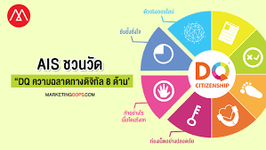

ความฉลาดทางดิจิทัล (DQ: Digital Intelligence Quotient)
คือกลุ่มของความสามารถ ทางสังคม อารมณ์ และการรับรู้ที่ท าให้คนคนหนึ่งสามารถเผชิญกับความท้าทายบนเส้นทางของชีวิต ในยุคดิจิทัลและสามารถปรับตัวให้เข้ากับชีวิตดิจิทัลได้ ความฉลาดทางดิจิทัลครอบคลุมทั้งความรู้ ทักษะ ทัศนคติและค่านิยมที่จ าเป็นต่อการใช้ชีวิตในฐานะสมาชิกในโลกออนไลน์ กล่าวอีกนัยหนึ่งคือ ทักษะการใช้สื่อและการเข้าสังคมในโลกออนไลน์คล้ายเป็นกรอบแนวคิดที่ครอบคลุมของความสามารถ ทางเทคนิคความรู้ความเข้าใจ และความคิดทางสังคมที่มีพื้นฐานอยู่ในค่านิยมทางศีลธรรม ช่วยให้บุคคล ที่จะเผชิญกับความท้าทายทางดิจิทัล ความฉลาดทางดิจิทัล มี 3 ระดับ 8 ด้าน และ 24 สมรรถนะที่ ประกอบด้วยความรู้ ทักษะ ทัศนคติและค่านิยม ระดับของความฉลาดทางดิจิทัล สามารถแบ่งได้ 3 ระดับ ระดับที่ 1 พลเมืองดิจิทัล (Digital Citizenship) หมายถึง ความสามารถใช้เทคโนโลยีและสื่อ ดิจิทัลได้อย่างปลอดภัย มีความรับผิดชอบและมีประสิทธิภาพ ระดับที่ 2 การสร้างสรรค์ทางดิจิทัล (Digital Creativity) ความสามารถใช้เทคโนโลยีดิจิทัล ในเชิงสร้างสรรค์ ความสามารถในการเข้าเป็นส่วนหนึ่งของเศรษฐกิจดิจิทัลโดยการใช้เครื่องมือดิจิทัล เปลี่ยนความคิดได้กลายเป็นสินค้าหรือบริการที่ใช้งานได้จริง ระดับที่ 3 ผู้ประกอบการดิจิทัล (Digital Enterpreneurship) หมายถึง ความสามารถใช้สื่อ ดิจิทัลและเทคโนโลยีอันทันสมัยเข้าแก้ปัญหาในระดับโลกหรือสร้างโอกาสใหม่ ๆ ความฉลาดทางดิจิทัล เป็นผลจากศึกษาและพัฒนาของ DQ institute หน่วยงานที่เกิดจากความ ร่วมมือกันของภาครัฐและเอกชนทั่วโลกประสานงานร่วมกับ เวิลด์อีโคโนมิกฟอรั่ม (World Economic Forum) ที่มุ่งมั่นให้เด็กๆ ทุกประเทศได้รับการศึกษาด้านทักษะพลเมืองดิจิทัลที่มีคุณภาพและใช้ชีวิต บนโลกออนไลน์อย่างปลอดภัยด้วยความก้าวหน้าของเทคโนโลยีสมัยใหม่ อย่างไรก็ตาม ระดับทักษะ ความฉลาดทางดิจิทัลของเด็กไทยตามรายงาน DQ report 2018 ยังอยู่ในระดับต�่ำอยู่ ทั้งนี้เนื่องจาก ส�ำนักงานส่งเสริมเศรษฐกิจดิจิทัล (ดีป้า) กระทรวงดิจิทัลเพื่อเศรษฐกิจและสังคม, ส�ำนักงานคณะ กรรมการการศึกษาขั้นพื้นฐาน (สพฐ.) กระทรวงศึกษาธิการ และ DQ Institue ร่วมกันท�ำโครงการ #DQEveryChild โดยศึกษาเด็กไทยอายุ 8-12 ปี ทั่วประเทศ 1,300 คน ผ่านแบบส�ำรวจออนไลน์ DQ Screen Time Test ชุดเดียวกันกับเด็กประเทศอื่นๆ รวมกลุ่มตัวอย่างทั่วโลกทั้งสิ้น 37,967 คน ผลการศึกษาพบว่า เด็กไทยมีความเสี่ยงจากภัยออนไลน์ถึง 60% ในขณะที่ค่าเฉลี่ยของการศึกษา ครั้งนี้อยู่ที่ 56% (จาก 29 ประเทศทั่วโลก) ภัยออนไลน์ที่พบจากการศึกษาชุดนี้ประกอบไปด้วย การกลั่นแกล้งบนโลกออนไลน์, ถูกล่อลวงออกไปพบคนแปลกหน้าจากสื่อสังคมออนไลน์, ปัญหา การเล่นเกม เด็กติดเกม, ปัญหาการเข้าถึงสื่อลามกอนาจาร, ดาวน์โหลดภาพหรือวิดีโอที่ยั่วยุอารมณ์เพศ และพูดคุยเรื่องเพศกับคนแปลกหน้าในโลกออนไลน์ ดังนั้น ทักษะความฉลาดทางดิจิทัลจึงควรที่ จะถูกน�ำมาใช้ในการพัฒนาคุณภาพและความสามารถของเยาวชนไทยความฉลาดทางดิจิทัล เป็นกรอบแนวคิดที่ครอบคลุมของความสามารถทางเทคนิคความรู้ความเข้าใจและความคิดทางสังคมที่มีพื้นฐานอยู่ในค่านิยมทางศีลธรรมที่ช่วย
ให้บุคคลที่จะเผชิญกับความท้าทายทางดิจิทัล ความฉลาดทางดิจิทัล มีสามระดับ 8 ด้าน และ 24 สมรรถนะที่ประกอบด้วย ความรู้ ทักษะ ทัศนคติและค่านิยม
โดยบทความนี้จะกล่าวถึงทักษะ 8 ด้านของความฉลาดดิจิทัลในระดับพลเมืองดิจิทัล ซึ่งเป็นความสามารถในการใช้เทคโนโลยีดิจิทัลและสื่อในรูปแบบที่ปลอดภัยรับ
ผิดชอบ และมีจริยธรรม
